COMPOSITION OF THE SYSTEM
- Path
- Descriptions > 50 auxiliary units > COMPOSITION OF THE SYSTEM
- Kind
- system description
- Applies to
- all engines; all production periods
- Interactive page
- https://sloeber94.github.io/elrnDB-lThss/en/#/162340
Applies to: all engines; all production periods
DIAGRAM
The composition of the automatic climate control system is illustrated in the diagram below:
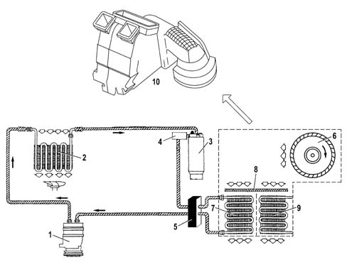
- 1. Compressor.
- 2. Condenser.
- 3. Drier filter.
- 4. Four stage pressure switch.
- 5. Expansion valve.
- 6. Fan.
- 7. Evaporator.
- 8. Pollen filter.
- 9. Heater radiator.
- 10. Distributor unit
By analyzing the pressure values inside the system, two circuits are defined:
- High Pressure circuit, comprising the section of the system including the compressor, the condenser, the drier filter and the expansion valve. The pressure values in this circuit vary between 10 and 17 bar (80-100°C).
- Low Pressure Circuit, comprising the section of the system incuding the expansion valve and the evaporator. The pressure values in this circuit vary between 0.5 and 2 bar (1-5°C).
As can be seen the expansion valve is the same for both circuits and joins them. In effect, the coolant fluid inside the valve undergoes a drastic fall in pressure.
DESCRIPTION OF THE COMPONENTS
1. Compressor
This is the operating machine for the climate control system that uses the mechanical energy fro the engine via a pulley and the electro-magnetic clutch to circulate the coolant fluid in the circuit.
Depending on the version, this vehicle is equipped with either SANDEN or NIPPODENSO variable capacity compressors. These compressors make it possible to gradually alter the flow rate of the coolant fluid reaching the evaporator.
The adoption of these compressors makes the presence of the frost sensor redundant and it is therefore no longer fitted.
The adjustment of these compressors is based on the intake pressure value according to the following logic:
- low pressure, the capacity of the compressor tends towards the minimum value.
- High pressure, the capacity increases.
This adjustment logic refers to the following practical conditions:
- "low intake pressure" means that he load on the climate control system is such that it does not require a high fluid flow rate. Therefore the intake pressure for the compressor is reduced compared with normal operation and the capacity of the compressor is reduced.
- "high intake pressure" means that there is an increased load on the climate control system and the amount of coolant fluid required is high. Therefore the pressure at the compressor intake is increased compared with normal operation and the capacity of the compressor increases to increase the flow rate of the fluid in the circuit.
These compressor operate at maximum capacity in normal operating conditions.
The compressors for self-driven climate control systems take their power directly from the crankshaft by means of a poly-V belt.
The poly-V belt is wound around the compressor pulley (1).
The pulley is not in one piece with the compressor shaft, but is fitted on it by means of a ball bearing (2).
The pulley is fitted between the electro-magnet (3) and the front disc by an electro-magnet coupling (4). The front disc is in one piece with the end shaft of the shaft through the coupling with the splined profile.
When the climate control system is not working, the pulley freewheels on the ball bearing, driven by the poly-V belt. The front disc is located 0.6 - 0.8 mm from the pulley. The compressor is therefore inactive (A).
When the system is switched on, the electro-magnet is supplied and produces a magnetic field. The resulting force attracts the front disc against the pulley, joining it to the coupling and, consequently, the compressor shaft. This therefore causes the latter to rotate (B).
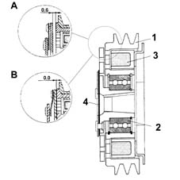
The management of the engagement of the compressor is entrusted to the Climate Control Node (NCL).
The NIPPODENSO ND7SB16 compressor is the alternating piston type.
It is fitted on all versions excluding the 3.0 V6 petrol.
The capacity of this type of compressor can vary as a result of: variations in the load required from the system, changes in the outside temperature and/of humidity conditions, sharp alterations in the engine load conditions.
The main features of the compressor are:
- direction of rotation: clockwise
- Max continuous number of revs: 8500 rpm.
- Max non-continuous number of revs: 9200 rpm.
- Number of pistons: 7.
- Min stroke: 4.5 mm.
- Max stroke: 28.69 mm.
- Min capacity: 8 cm³/rev
- Max capacity: 161 cm³/rev
- Quantity of lubricant: 140 ± 10 cm³ .
- Type of oil: ND 8.
The compressor consists of seven pistons (1) fixed to a connecting rod holder oscillating plate (2). The pistons move inside the cylinders housed in the compressor casing and are moved by the oscillations of the connecting rod holder plate. The movement of the plate is produced by the transmission shaft (3). The latter is rotated by the pulley with the electro-magnet clutch, consequently by the crankshaft.
The flow rate of the coolant fluid is regulated by altering the capacity of the compressor. This is achieving by varying the angle of the connecting rod holder plate, in other words by altering the piston stroke.
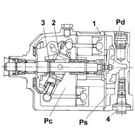
The inclination angle (?) of the connecting rod holder plate is determined by the regulating valve (4), which allows the alteration in the pressure inside the compressor casing (Pc) depending on the intake pressure.
In normal operating conditions, the intake pressure (Ps) acting on the diaphragm (1) overcomes the force exerted by the spring (2). The ball (3) closes the flow for the supply pressure (Pd) and the pressure inside the compressor casing (Pc) remains unchanged. The capacity does not alter, in other words it remains at the maximum value.
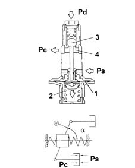
In the case of "low intake pressure" it does not manage to overcome the force of the spring (2), therefore the ball (3) is moved and releases the flow of the supply pressure (Pd). The pressure chamber (4) (Pd) is in contact with the the entire compressor casing: the pressure inside the compressor (Pc) increases.
Under these circumstances (Pc) > (Ps), in other words the pressure acting under the piston skirt is greater than that at the piston crown, means that the connecting rod holder plate and (?) tends to be reduced thereby reducing the capacity of the compressor and, consequently, the flow rate.
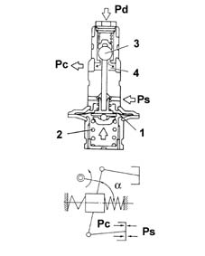
The SANDEN SD7V16 compressor is the alternating piston, variable capacity type.
It is fitted on the 3.0 V6 petrol engine.
The capacity of this type of compressor can vary as a result of: variations in the load required from the system, changes in the outside temperature and/of humidity conditions, sharp alterations in the engine load conditions.
The main features of the compressor are:
- direction of rotation: clockwise.
- Max continuous number of revs: 7000 rpm.
- Max non-continuous number of revs: 8000 rpm.
- Number of pistons: 7.
- Min stroke: 2.2 mm.
- Max stroke: 34.2 mm.
- Min capacity: 10.4 cm³/rev
- Max capacity: 161.3 cm³/rev
- Quantity of lubricant: 135 cm³.
- Type of oil: ND 8.
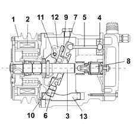
The compressor is caused to rotate by the power unit through the pulley (1) and the electro-magnetic clutch (2).
The compressor propeller shaft (3) causes the rotation of a circular shaped rotor (7). The rotor is not fitted on the shaft, but is connected to it by means of a bearing (11), in one piece with the shaft, that engages with a slotted plate (12) fastened to the rotor.
There is a circular plate known as the "connecting rod holder" (6) fitted on the rotor hub to which the connecting rods (5) for the pistons (4) are connected by means of ball joints. The rotor - connecting rod holder plate coupling is achieved by means of an axial thrust bearing (9) fitted between the rotor ring gears and the plate and a radial bearing (10) between the rotor hub and the plate inner ring.
The connecting rod holder plate, in addition to being connected to the rotor, is secured to the compressor casing by means of splining in the edge of the ring gear, which houses an adjustable bush made from a low friction material which engages the end of a slide made from a low friction material (13). The other end of the slide is inserted in an adjustable housing in the compressor casing.
The alternating motino of the pistons is produced as a result of the angle of the rotation axis of the rotor-connecting rod holder plate assembly in relation to the compressor shaft.
It is necessary to point out that, given the fitting described previously, the connecting rod holder plate does NOT rotate with the rotor, but obtains the oscillating movement produced by the rotation of the rotor in relation to a tilted axis from it.
The inclination of the assembly is made possible by the opportunity for the shaft bearing to slide inside the rotor plate slot.
The angle of the plate is determined by a regulation valve (8) according to the difference in pressure between the intake and the supply.
In normal operating conditions, the compressor works at maximum capacity, whilst with a low intake pressure the angle of the plate decreases and there is a reduction in capacity.
2. Condenser
The condenser is a heat exchanger located in front of the engine cooling radiator and therefore air comes into contact with it whilst the vehicle is moving forward.
The condenser is positioned between the compressor outlet and the inlet for the drier filter and has the function of liquifying the refrigerant in a gaseous state coming from the compressor: The refrigerant fluid in a gaseous state and at a high temperature passes throug the condenser coils and liquifies, on average, at a temperature of 60°C.
When the vehicle is stationary or driving in traffic, the air is moved by the engine cooling circuit radiator fan.
An insufficient thermal exchange in the condenser causes the incomplete condensation of the fluid and, therefore, an increase in the system pressure, considerably reducing the efficiency of the actual system.
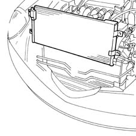
3. Drier filter
The drier filter is connected to the condenser outlet and the inlet for the evaporator and has the following functions: filtering any impurities in the refrigerant fluid (containing some of the compressor oil), separating the fluid from possible dampness, acting as a reserve reservoir for the actual refrigerant.
The impurities that could block the expansion valve are trapped by two filtering layers. The possible dampness is absorbed by a chemical compound known as silicagel.
The refrigerant fluid enters through the intake (1) in a liquid state (coming from the condenser), passes through the first of the two filtering layers (3), which traps any impurities, is filtered by the silicagel (4), which retains the dampness and then, lastly, passes through the second filtering layer.
The fluid comes out of the filter through the outlet pipe (2) and flows to the expansion valve. The intake for the pipe (2) is positioned at the base of the filter to guarantee that the refrigerant fluid sent to the expansion valve is in a liquid state. In effect, it can happen that there are some saturated vapours at the filter inlet (condenser outlet). In this case, the refrigerant fluid in a gaseous state remains in the top part of the filter. The introduction of refrigerant fluid in a gaseous state into the evaporator (via the expansion valve) will reduce the efficiency of the system.
A certain amount of compressor lubircation oil, which normally circulates mixed with the refrigerant fluid, is also deposited at the bottom of the filter. The outlet pipe also draws in lubrication oil in addition to refrigerant fluid in a liquid state.
The level of the fluid inside the drier filter mainly depends on the temperature of the actual fluid and the system load conditions.
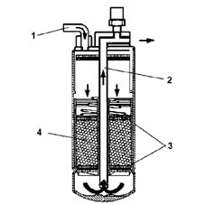
4. Multi-stage pressure switch (4 STAGE)
Located on the high pressure inlet pipe on the drier filter.
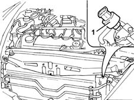
- 1. Multi-stage pressure switch
This is a 4 stage pressure switch that controls the safe and correct operation of the system.
The 4 pressure stages allows the compressor and the cooling fan to be switched on/off:
- 1st stage (about 2.5 bar): minimum pressure that the compressor can be switched on at.
- 2nd stage (about 15 bar): pressure that requires the engagement of the first fan speed.
- 3rd stage (about 20 bar): pressure that requires the engagement of the second fan speed.
- 4th stage (about 28 bar): maxmum pressure that switches off the compressor.
5. Expansion valve
The expansion valve is fitted on the evaporator inlet and outlet ducts with the task of regulating the flow and expansion of the R134a fluid at the evaporator intake.
The refrigerant fluid undergoes a sudden and drastic fall in pressure and temperature inside the valve. This results from the fluid entering being made to pass through an opening at high pressure (10 - 17 bar). The section of the opening is determined by the position of the shutter (4), which is automatically modified by the actual valve.
The automatic adjustment of the section through which the refrigerant fluid passes, inside the expansion valve, is carried out by a sensitive bulb (1) which is affected by the pressure of the refrigerant fluid coming out of the evaporator. Depending on the latter, the valve suitably regulates the narrow section (2) acting, by means of a rod (6), on the shutter, opposed by a spring (3) and determines the extent of the refrigerant fluid flow. The opposing spring is pre-loaded via a regulation screw (5) in production.
The valve regulation logic is as follows:
- the increase in pressure at the evaporator outlet, detected by the bulb, ensures that the valve tends to close with a consequent decrease in the flow rate of the fluid in the evaporator.
- A low evaporator outlet pressure involves an increase in the narrow section and, therefore, the flow of refrigerant fluid.
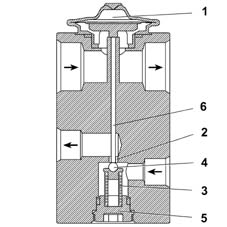
- 1. Sensitive bulb
- 2. Narrow section
- 3. Spring
- 4. Shutter
- 5. Adjustment screw
- 6. Rod
6. Fan
The fan has the function of sending outside or recirculation air to the evaporator. It is activated by a brushless electric motor with a 12 V supply and operated at different speeds by a PWM signal coming from the NCL.
It is located inside the climate control system assembly near the evaporator.
The different fan speeds determine the different air flow rate values in the passenger compartment.
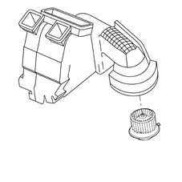
7. Evaporator
The evaporator is a heat exchanger housed inside the distributor unit. It consists of an aluminium structure with fins to increase the heat exchange surface area.
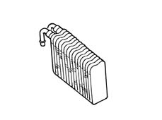
The evaporator has the task of removing heat and humidity from the air introduced into the passenger compartment, taking advantage of the change in state of the refrigerant fluid, from a liquid to a gas, which takes place inside it.
This change in state is determined by the air directed towards the evaporator by the fan. The air comes from the outside or from the passenger compartment via the recirculation function.
As the air is at a higher temperature than the refrigerant, it gives off some of its heat, thereby cooling down. The heat given off causes the vaporization of the refrigerant fluid (change of state) inside the evaporator. The humidity, present in the air, condenses on the evaporator fins, in the form of droplets, as a result of the decrease in temperature. These are collected in a chamber and moved away, as appropriate. This produces cool, dehumidified air.
The process is extremely quick since the refrigerant fluid enters the coil atomized at a low pressure and low temperature.
The evaporator is chemically treated to be resistant to the corrosion caused by the condensation process.
8. Pollen filter
This is a combination type passenger compartment air filter: PARTICLES + ACTIVE CHARCOAL.
It is designed to filter the air entering the passenger compartment.
The first layer (particles) prevents the intake of pollen and pollutant particles into the passenger compartment; the second layer (active charcoal) reduces the annoying sensation caused by unpleasant smelling substances due to dampness forming on the surface.
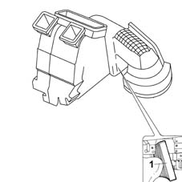
- 1. Pollen filter
The main specifications of the filter element are:
- high filtering capacity: the filter traps more than 50% of particles between 0.5 ¸ 1 micron in size, more than 80% between 1 ¸ 1.5 micron and about 98% bigger than 2 micron.
9. Heater radiator
This is a heat exchanger, housed inside the distributor unit, connected to the engine cooling circuit by means of two pipes: one takes hot water from the engine, the other allows the return of coolant to the engine.
The function of the heater is to supply the heat needed to heat up the air introduced into the passenger compartment.
10. Timing assembly
This is the container inside of which the outside or recirculation air is climatized and distributed to the vents selected by the user.
It is located in the passenger compartment, under the dashboard by the centre console.
The following components are housed inside the distributor unit:
- air flaps
- Evaporator.
- Heater radiator.
- P.T.C. (Diesel versions only).
- Flap actuators.
- Air temperature sensors.
- Pollen filter.
- Fan.
The air inside the distributor unit is moved by the fan.
The air flaps inside the distributor unit are activated by the actuators and direct the air to the evaporator and the heater radiator. The direction created by the position of the flaps determines the temperature of the air coming out of the vents.
In the DUAL ZONE system there are two areas managed separately inside the distributor unit. This is made possible by a vertical partition that divides the unit into two compartments which can be regulated independently.
The division of the volume inside the distributor unit is about 1/3 for the left zone (driver's zone) and 2/3 for the right zone (front and rear passengers zone).
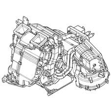
P.T.C. additional heater (JTD diesel versions only)
The PTC additional heater, fitted on JTD versions only, provides additional thermal power to the heater's. The P.T.C. is an electrical resistance, located near the heater radiant mass, with a maximum power of 700 W and a voltage of 13.5 V.
The task of the additional heater is to speed up the heating of the air if the temperature of the engine is below 64°C.
The voltage at connector A determines 33% of the heater power.
The voltage at connectors B-C determines 66% of the heater power.
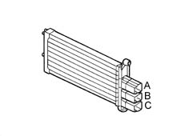
The logic involves managing the activation/deactivation of the control relays depending on the temperature of the H20 and the battery voltage.
For more detailed instructions, refer to the "Control strategies and functions" chapter, "PTC management" paragraph.
Sensors
A.Q.S. pollution sensor
The pollution sensor is an electronic device designed to send a signal to the recirculation flap:
- when the air pollution exceeds pre-set harmful levels, the flap closes off the intake of outside air and the NCL activates the recirculation of the interior air.
- When the air pollution returns to acceptable limits, the flap reopens the intake of outside air and the recirculation function is disabled by the NCL.
It is fitted on the distributor unit outside air intake.
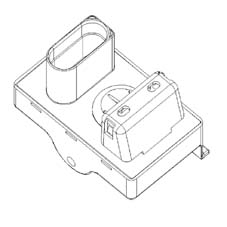
The AQS sensor is an integrated system comprising a sensitive element, a processor and an output interface.
It is possible, through the use of a special sensitive element, to detect the presence, in the air surrounding the vehicle, of oxidizing pollutant particles (e.g. CO) or reducing agents (e.g. NOx).
The sensitivity of the system is calibrated by the potential danger of the pollutant gases according to the M.A.K. index (maximal concentration of harmful substances at work at an exposition of over 8 hours). The sensitive element is heated and regulated at a constant temperature of 300°C to supply the same performance in an ambient temperature range of between -25°C and 85°C. It is not affected by the speed or the temperature of the air passing through it.
The sensor produces a PWM signal within around 40 secs from when it is first supplied.
PWM signal (time base: 100mSec) | Meaning |
|---|---|
0% | short circuit to earth of the signal line |
20% | non polluted air circulation |
40% | level 1 pollution |
50% | level 2 pollution |
60% | level 3 pollution |
80% | sensor error |
100% | short circuit to +12V of the signal line |
If the sensor has not been used for a long period its response time varies as described below:
Time not in use | Response time |
|---|---|
< 24h | max 1 sec |
24 h < t < 76 h | max 30 sec |
76 h < t < 480 h | max 180 sec |
> 480 sec | max 300 sec |
In order to check the sensor:
- place the key in the ON position.
- Wait 36 secs for the sensor to warm up.
- Within 120 secs, inject pollutant gas into the sensor using the canister (part. n° 71715571).
- Check that the result of the test is positive using the diagnostic equipment.
Solar sensor
The solar sensor is designed to quantify the thermal energy produced by the rays of the sun.
It is located in the dashboard, near the windscreen.
The sensor is the DUAL ZONE type for the optimum control of the dual climate control system temperature.
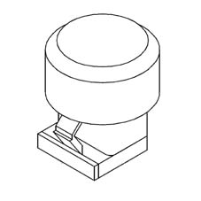
The task of this sensor is to transform the light signals (lux or kcal/m2h) into linear electrical signals. The sensor is a special type of diode (photodiode) which can alter its conduction depending on the quantity of light coming into contact with it.
In order to achieve a very fast response speed, the photodiode is equipped with a lens that focuses the light better.
Outside air temperature sensor
This sensor (1) has the function of measuring the outside air temperature.
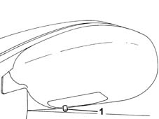
- 1. Outside air temperature sensor
It is an NTC sensor and it is fitted inside the driver's external rear view mirror.
It has an operating range of -40°C - 80°C.
The sytem checks the sensor and updates the value in the following conditions:
- temperature measured greater than that memorized: the update only takes place if the speed of the vehicle is equal to or greater than 30 Km/h and the increase in temperature is measured for more than one minute.
- Temperature measured equal to or less than that memorized: the system updates the outside temperature value.
Treated air temperature sensors
These sensors are designed to measure the temperature of the air treated by the climate control system before it enters the passenger compartment
There are four treated air temperature sensors: two are located in the duct that directs the air to the lower (floor) vents and the other two are located near the centre vents.
They are NTC sensors with the following specifications:
- operating range: -40°C - 100°C.
- Precision: 0.5 °C
- Resistance at 25°C: 10Kohm ± 5%.
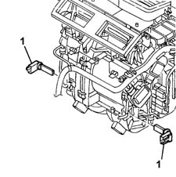
PASSENGER COMPARTMENT AIR TEMPERATURE SENSOR
This sensor has the task of measuring the actual temperature of the air in the passenger compartment.
It is an NTC sensor incorporated in the climate control system front control panel.
The specifications of this sensor are:
- resistance at 25°C: 10Kohm ± 5%.
- Operating range: -40°C - 100°C.
The sensor is ventilated; it incorporates a small, brushless type fan with 6 vanes with a rotation speed of 3600 rpm (± 600) and an air supply > 2.0 m/s. The latter is always supplied so that the temperature reading is not affected by the stationary air inside the dashboard which is therefore warmer.
Actuators
Air mixture flap actuators
The adjustment of the treated air temperature is carried out via the temperature setting knobs.
The actuators activate the rotation of the mixture flaps depending on the command from the control unit.
A motor with a 12 Volt supply controls the rotary movement of a drive pin which acts directly on the mixture flaps.
Air distribution actuator
The actuator moves the distribution flaps into the 5 possible positions by means of a rack guide with splining for the pins and two levers.
Main: DEF, VENT, FLOOR;
Combination: BILEVEL, HEAT.
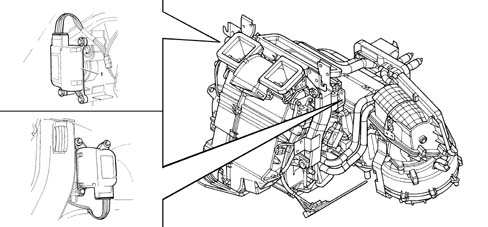
- 1. Air distribution actuator.
- 2. NCL Climate Control Node. The +30 comes from the body computer node (from the ultrasound welding node).
SPECIFICATIONS:
- nominal voltage 12V.
- Nominal operating frequency 200 Hz.
- Nominal speed 5 RPM.
- Steps per rev 2400 (2400 impulses for 1 rev).
- Reduction ratio 100.
- Coil resistance 70 ohm.
Recirculation actuator
The recirculation actuator activates the rotation of the flap in the two dynamic air and recirculation limit positions with no intermediate positions.
A motor with a 12 Volt supply controls the rotary movement of a drive pin which acts directly on the flap. Reversing the polarity produces a movement in the opposite direction.
SPECIFICATIONS:
- nominal voltage 12V.
- Nominal operating frequency 200 Hz.
- Nominal speed 5 RPM.
- Steps per rev 2400.
- Reduction ratio 100.
- Coil resistance 70 ohm.
The flap is closed in a time of < 2.5 secs.
The feedback control for all the mixture, distribution and recirculation motors is carried out by measuring the difference in the current absorbed by the coils supplied to identify a loss in steps corresponding to sticking or a mechanical failure.
Climate Control Node NCL
It is located in the centre console, fitted behind the ashtray housing.
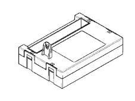
It receives a supply voltage of ...V.
It is connected to the low speed B-CAN.
Chapter 55 contains a more detailed description of its functions.
The climate control unit (NCL) receives the following information from the Body Computer node (NBC) via the CAN:
- outside air temperature.
- Engine coolant temperature.
- Engine speed.
- Vehicle speed (speedometer signal).
- Battery voltage (state of the battery charge).
Refrigerant fluid
The fluids suitable to be used in a refrigerant circuit, such as the one used for the climate control system, are known as refrigerants. They are fluids capable of producing a considerable decrease in temperature and, therefore, suitable for absorbing a large amount of the heat present in the air, changing from a liquid state to a gaseous stage.
'The main specifications of a refrigerant fluid should be:
- LOW BOILING POINT at normal pressure.
- A LOW FREEZING POINT, to prevent solidification even in the harshest climates.
- A LOW EVAPORATION TEMPERATURE (change from a liquid state to a gaseous state).
- A LOW CRITICAL TEMPERATURE (temperature above whch it is no longer possible to liquefy the gas, whatever the pressure applied).
- COMPATIBLE WITH THE ENVIRONMENT.
- MIXABLE with the lubricants used in these systems.
In addition, they should not be:
- EXPLOSIVE AND FLAMMABLE; to prevent danger in the case of leaks inside the engine comparment.
- TOXIC OR HARMFUL; in order not to cause injury to people.
- OXIDIZING AND/OR CORROSIVE; not to damage the system components.
The fluid whose properties are current best suited to the needs of the climate control systems used on motor vehicles is hydrofluorocarbon (HCF) CH2F CF3 or R134a.
The specifications of this fluid are:
- boiling point at a pressure of 1 bar: -26.5 °C.
- Freezing point: -101 °C.
- Latent heat vaporization: 175.05 kj/kg (about 42 kCal/kg).
- Ozone destruction potential: 0.
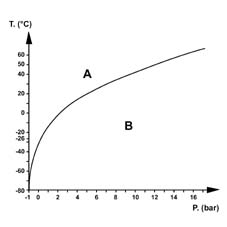
The system on this vehicle is pressurized with:
- 730 ± 25 g of R 134a fluid for the 3.0 V6 version
- 650 ± 25 g of R 134a fluid for all the other versions.
Lubrication
The climate control system compressors that use HFC R134a refrigerant fluid are lubricated using synthetic oils.
The main feature of these oils is their ability to mix with the refrigerant fluid because they circulate throughout the system transported by the R134a.
In reality, the compressor oil also lubricates the expansion valve and the connector seals.
The following synthetic oils are used: P.A.G. (polyalkaligycols) and N.D. (Nippondenso). They are oils produced through the atomization of alcohol with ethylene and propylene oxides. They are very hygroscopic (capacity to absorb humidity) and therefore the compressors need to be kept well sealed to prevent the oxidation of the oil.
In the case of operations that involve replacing the system components, special oil must be added, in the quantities indicated below, before refitting:
- Drier filter: 15 cm³
- Pipes: 5 cm³/m
- Evaporator: 40 cm³
- Condenser: 40 cm³
If the compressor is being replaced, proceed as follows:
- Pour the oil contained in the compressor to be replaced into a graduated container.
- Repeat the previous operation for the new compressor.
It should be noted that the quantity of oil removed from the new compressor is greater than that removed from the compressor being replaced.
- Equalize the two levels, removing the excess amount of oil from the new compressor and reintroduce the quantity of oil remaining. The amount of oil eliminated corresponds to that remaining inside the climate control system circuit components.
The following WARNINGS must always be taken into account:
- do not use the oil used in systems pressurized with R12 or Freon 12 for systems pressurized with R134a.
- The level of the oil in the compressor does not have to be checked periodically unless leaks have been noticed or there are breaks in the pipes or one of the components has to be replaced.
- It should be remembered that, with the circuit switched off and the outside temperature between 20 and 25°C, the pressure in the entire circuit is 5-6 bar. If the level of the oil has to be checked, drain the system to prevent a jet of oil or coolant from escaping.